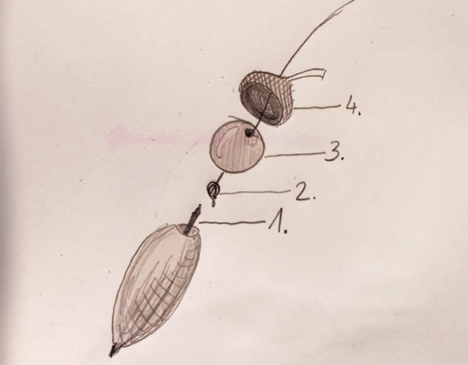
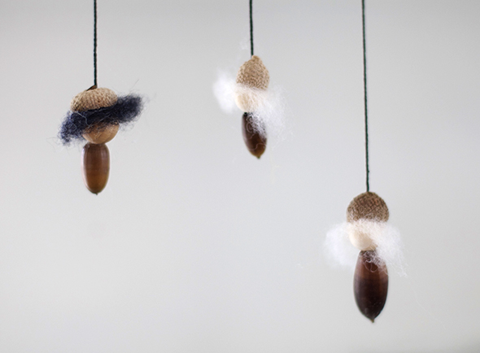

Siehe Zeichnung:
- Zahnstocher (1) in die Eichel stecken, am besten mit etwas Holzleim.
- Ein kleines Loch in das Hütchen (4) stechen und einen Faden durch Hütchen und Holzperle (3) fädeln. Das untere Fadenende verknoten (2).
- Holzleim ins Hütchen und auf den Zahnstocher geben und alles zusammenstecken.
- Trocknen lassen!
Besonders schick: Haare aus Filzwolle.

